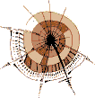

|  | SELFHTML Forum |
|
| |
In dieser Datei wird die Template-Bibliothek definiert. Die Template-Bibliothek arbeitet recht einfach: ein Script transformiert Template-Dateien nach C und compiliert sie in DSO-Dateien. Diese DSO-Dateien werden dynamisch gelinkt und ausgeführt.
Diese Funktion initialisiert ein Template. Es erwartet eine Template-Struktur und einen Datei-Namen (kompletter, absoluter Pfad!) als Parameter. Beispiel:
t_template tpl;
if(tpl_init(&tpl,"/home/ckruse/template.so") != 0) {
printf("Template-Initialisierung ist fehlgeschlagen!\n");
exit(1);
}
tpl_finish(&tpl);
|
Diese Funktion setzt eine Template-Variable. Sie erwartet die Template-Struktur, den Variablen-Namen, den Wert und die Länge des Wertes. Beispiel:
tpl_setvar(&tpl,"username","ck",2); |
Diese Funktion hängt einen Wert an eine Template-Variable an. Benutzung wie tpl_setvar. Beispiel:
tpl_appendvar(&tpl,"username","ruse",4); |
Diese Funktion löscht eine Template-Variable. Beispiel:
tpl_freevar(&tpl,"username"); |
Diese Funktion parsed ein Template. Es wird beim Parsen direkt ausgegeben. Beispiel:
tpl_parse(&tpl); |
Diese Funktion parsed eine Template-Variable und schreibt den geparseden Inhalt in den Speicher. Beispiel:
tpl_parse_to_mem(&tpl);
printf("%s",tpl.parsed.content);
|
Diese Funktion rämt eine Template-Struktur auf. Beispiel:
tpl_finish(&tpl); |
Diese Funktion gibt einen Pointer auf eine Variablen-Struktur zurück, wenn die mit name bezeichnete Variable vorhanden ist, ansonsten NULL. Beispiel:
t_variable *v = tpl_getvar(&tpl,"username");
if(v) {
printf("%s\n",v->content.content);
}
|
© 2000/2001  selfhtml@teamone.de / version 1.0 by
selfhtml@teamone.de / version 1.0 by  Christian Kruse
Christian Kruse